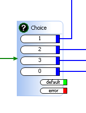

|
|
ActionStep Choice Description
SafiServer ActionStep used to validate a given value against a number of different cases (or choice items). If none of the case items match the value; the default path (green) is taken.
Example Choice ActionStep with three choice items:  NOTE: When using scripting to derive a value for a Choice Option and the desired result needs to be an integer (i.e. a digit pressed on a key pad); you must take that numeric value and strip the floating point using the .toFixed(0) Javascript operation. Example (will output 3): myVar = 1; Attributes
|